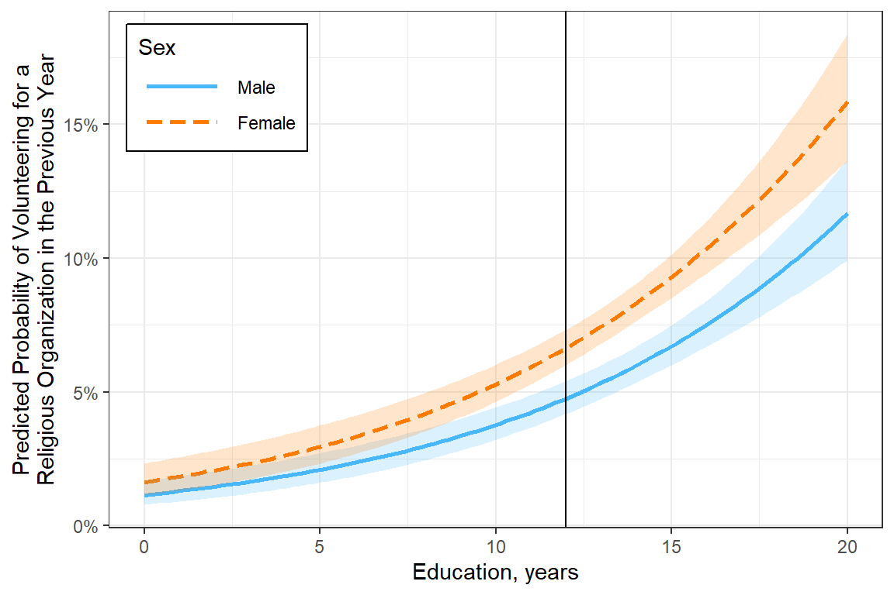

15 Ex: Logistic - volunteering (Hoffman)
Compiled: April 21, 2025
15.1 PREPARATION
15.1.2 Load Data
This dataset comes from John Hoffman’s textbook: Regression Models for Categorical, Count, and Related Variables: An Applied Approach (2004) Amazon link, 2014 edition
Chapter 3: Logistic and Probit Regression Models
Dataset: The following example uses the SPSS data set gss.sav. The dependent variable of interest is labeled volrelig.
“The variable labeled
volrelig, which indicates whether or not a respondent volunteered for a religious organization in the previous year is coded0= no,1= yes. A hypothesis we wish to explore is that females are more likely than males to volunteer for religious organizations. Hence, in this data set, we code gender as0= male and1= female. In order to preclude the possibility that age and education explain the proposed association betweengenderandvolrelig, we include these variables in the model after transforming them into z-scores. An advantage of this transformation is that it becomes a simple exercise to compute odds or probabilities for males and females at the mean of age and education, because these variables have now been transformed to have a mean of zero.
df_spss <- haven::read_spss("https://raw.githubusercontent.com/CEHS-research/data/master/Hoffmann_datasets/gss.sav") %>%
haven::as_factor() %>%
haven::zap_label() %>% # remove SPSS junk
haven::zap_formats() %>% # remove SPSS junk
haven::zap_widths() # remove SPSS junktibble [2,903 × 20] (S3: tbl_df/tbl/data.frame)
$ id : num [1:2903] 402 1473 1909 334 1751 ...
$ marital : Factor w/ 5 levels "married","widowed",..: 3 2 2 2 1 3 5 1 5 2 ...
$ divorce : Factor w/ 2 levels "yes","no": 1 2 2 1 2 1 2 1 2 2 ...
$ childs : Factor w/ 9 levels "0","1","2","3",..: 3 1 8 3 3 1 3 4 1 3 ...
$ age : num [1:2903] 54 24 75 41 37 40 36 33 18 35 ...
$ income : num [1:2903] 10 2 NA NA 12 NA 9 NA NA 6 ...
$ polviews: Factor w/ 7 levels "extreme liberal",..: 4 5 7 4 7 7 NA 4 4 4 ...
$ fund : Factor w/ 3 levels "fundamentalist",..: NA NA NA NA NA NA NA NA NA NA ...
$ attend : Factor w/ 9 levels "never","less than once a year",..: NA NA NA NA NA NA 7 4 3 4 ...
$ spanking: Factor w/ 4 levels "strongly agree",..: NA NA NA NA NA NA NA NA NA NA ...
$ totrelig: num [1:2903] NA NA NA NA NA NA NA 1000 NA NA ...
$ sei : num [1:2903] 38.9 29 29.1 29 38.1 ...
$ pasei : num [1:2903] NA 48.6 22.5 26.7 38.1 ...
$ volteer : num [1:2903] 0 0 0 1 1 0 0 0 1 0 ...
$ female : Factor w/ 2 levels "male","female": 2 1 2 2 1 2 2 2 2 1 ...
$ nonwhite: Factor w/ 2 levels "white","non-white": 2 1 2 1 1 1 2 1 2 1 ...
$ prayer : Factor w/ 6 levels "never","less than once a week",..: 5 4 5 4 4 4 5 4 4 4 ...
$ educate : num [1:2903] 12 17 8 12 12 NA 15 12 11 14 ...
$ volrelig: Factor w/ 2 levels "no","yes": 1 1 1 2 2 1 1 1 1 1 ...
$ polview1: Factor w/ 3 levels "liberal","moderate",..: 2 3 3 2 3 3 NA 2 2 2 ...15.1.3 Wrangle Data
df_gss <- df_spss %>%
dplyr::mutate(volrelig = volrelig %>%
forcats::fct_recode("Yes" = "yes",
"No" = "no")) %>%
dplyr::mutate(female = female %>%
forcats::fct_recode("Male" = "male",
"Female" = "female"))tibble [2,903 × 20] (S3: tbl_df/tbl/data.frame)
$ id : num [1:2903] 402 1473 1909 334 1751 ...
$ marital : Factor w/ 5 levels "married","widowed",..: 3 2 2 2 1 3 5 1 5 2 ...
$ divorce : Factor w/ 2 levels "yes","no": 1 2 2 1 2 1 2 1 2 2 ...
$ childs : Factor w/ 9 levels "0","1","2","3",..: 3 1 8 3 3 1 3 4 1 3 ...
$ age : num [1:2903] 54 24 75 41 37 40 36 33 18 35 ...
$ income : num [1:2903] 10 2 NA NA 12 NA 9 NA NA 6 ...
$ polviews: Factor w/ 7 levels "extreme liberal",..: 4 5 7 4 7 7 NA 4 4 4 ...
$ fund : Factor w/ 3 levels "fundamentalist",..: NA NA NA NA NA NA NA NA NA NA ...
$ attend : Factor w/ 9 levels "never","less than once a year",..: NA NA NA NA NA NA 7 4 3 4 ...
$ spanking: Factor w/ 4 levels "strongly agree",..: NA NA NA NA NA NA NA NA NA NA ...
$ totrelig: num [1:2903] NA NA NA NA NA NA NA 1000 NA NA ...
$ sei : num [1:2903] 38.9 29 29.1 29 38.1 ...
$ pasei : num [1:2903] NA 48.6 22.5 26.7 38.1 ...
$ volteer : num [1:2903] 0 0 0 1 1 0 0 0 1 0 ...
$ female : Factor w/ 2 levels "Male","Female": 2 1 2 2 1 2 2 2 2 1 ...
$ nonwhite: Factor w/ 2 levels "white","non-white": 2 1 2 1 1 1 2 1 2 1 ...
$ prayer : Factor w/ 6 levels "never","less than once a week",..: 5 4 5 4 4 4 5 4 4 4 ...
$ educate : num [1:2903] 12 17 8 12 12 NA 15 12 11 14 ...
$ volrelig: Factor w/ 2 levels "No","Yes": 1 1 1 2 2 1 1 1 1 1 ...
$ polview1: Factor w/ 3 levels "liberal","moderate",..: 2 3 3 2 3 3 NA 2 2 2 ...df_gss %>%
dplyr::select("Volunteered" = volrelig,
"Sex" = female,
"Age" = age,
"Education" = educate) %>%
psych::headTail() %>%
flextable::flextable() %>%
apaSupp::theme_apa(caption = "Partial Printout of the Dataset",
d = 0) %>%
flextable::align(part = "all", j = 1:2, align = "left") %>%
flextable::align(part = "all", j = 3.:4, align = "right") %>%
flextable::colformat_num(na_str = "-")Volunteered | Sex | Age | Education |
|---|---|---|---|
No | Female | 54 | 12 |
No | Male | 24 | 17 |
No | Female | 75 | 8 |
Yes | Female | 41 | 12 |
... | ... | ||
No | Female | 32 | 16 |
No | Female | 43 | 14 |
No | Male | 29 | 16 |
No | Male | 23 | 16 |
15.2 EXPLORATORY DATA ANALYSIS
15.2.1 Missing Data
df_gss %>%
dplyr::select("Volunteered" = volrelig,
"Sex" = female,
"Age" = age,
"Education" = educate) %>%
naniar::miss_var_summary() %>%
dplyr::select(Variable = variable,
n = n_miss) %>%
flextable::flextable() %>%
apaSupp::theme_apa(caption = "Missing Data by Variable")Variable | n |
|---|---|
Education | 9 |
Volunteered | 0 |
Sex | 0 |
Age | 0 |
15.2.2 Summary
df_gss %>%
dplyr::select("Volunteered" = volrelig,
"Sex" = female,
"Age" = age,
"Education" = educate) %>%
apaSupp::tab_freq(caption = "Summary of Categorical Variables")Statistic | ||
|---|---|---|
Volunteered | ||
No | 2,697 (92.9%) | |
Yes | 206 (7.1%) | |
Sex | ||
Male | 1,285 (44.3%) | |
Female | 1,618 (55.7%) | |
df_gss %>%
dplyr::select("Volunteered" = volrelig,
"Sex" = female,
"Age" = age,
"Education" = educate) %>%
apaSupp::tab_desc(caption = "Summary of Continuous Variables")NA | M | SD | min | Q1 | Mdn | Q3 | max | |
|---|---|---|---|---|---|---|---|---|
Age | 0 | 44.76 | 16.85 | 18.00 | 32.00 | 42.00 | 55.00 | 89.00 |
Education | 9 | 13.36 | 2.93 | 0.00 | 12.00 | 13.00 | 16.00 | 20.00 |
Note. N = 2903. NA = not available or missing; Mdn = median; Q1 = 25th percentile; Q3 = 75th percentile. | ||||||||
15.3 LOGISTIC REGRESSION
15.3.1 Compelete Subset
Rows: 2,894
Columns: 20
$ id <dbl> 402, 1473, 1909, 334, 1751, 292, 2817, 2810, 2232, 2174, 2644…
$ marital <fct> divorced, widowed, widowed, widowed, married, never married, …
$ divorce <fct> yes, no, no, yes, no, no, yes, no, no, no, no, no, no, yes, y…
$ childs <fct> 2, 0, 7, 2, 2, 2, 3, 0, 2, 2, 5, 0, 2, 1, 0, 1, 0, 0, 0, 0, 1…
$ age <dbl> 54, 24, 75, 41, 37, 36, 33, 18, 35, 35, 34, 40, 37, 41, 61, 2…
$ income <dbl> 10, 2, NA, NA, 12, 9, NA, NA, 6, 12, 11, 12, 10, 12, 12, NA, …
$ polviews <fct> middle of the road, slight conservative, extreme conservative…
$ fund <fct> NA, NA, NA, NA, NA, NA, NA, NA, NA, NA, NA, NA, NA, NA, NA, N…
$ attend <fct> NA, NA, NA, NA, NA, nearly every week, several times a year, …
$ spanking <fct> NA, NA, NA, NA, NA, NA, NA, NA, NA, NA, NA, NA, NA, NA, NA, N…
$ totrelig <dbl> NA, NA, NA, NA, NA, NA, 1000, NA, NA, NA, NA, NA, NA, NA, NA,…
$ sei <dbl> 38.9, 29.0, 29.1, 29.0, 38.1, 38.4, 31.3, NA, 39.0, 29.5, 50.…
$ pasei <dbl> NA, 48.6, 22.5, 26.7, 38.1, NA, NA, NA, 50.7, 78.5, NA, 73.6,…
$ volteer <dbl> 0, 0, 0, 1, 1, 0, 0, 1, 0, 0, 1, 0, 0, 0, 1, 0, 0, 0, 0, 0, 0…
$ female <fct> Female, Male, Female, Female, Male, Female, Female, Female, M…
$ nonwhite <fct> non-white, white, non-white, white, white, non-white, white, …
$ prayer <fct> daily, several times a week, daily, several times a week, sev…
$ educate <dbl> 12, 17, 8, 12, 12, 15, 12, 11, 14, 14, 12, 20, 12, 15, 20, 11…
$ volrelig <fct> No, No, No, Yes, Yes, No, No, No, No, No, No, No, No, No, No,…
$ polview1 <fct> moderate, conservative, conservative, moderate, conservative,…15.3.3 Parameter Table
Odds Ratio | Logit Scale | ||||||||
|---|---|---|---|---|---|---|---|---|---|
Variable | OR | 95% CI | b | (SE) | Wald | LRT | VIF | ||
(Intercept) | -4.83 | (0.45) | < .001*** | ||||||
female | .017* | 1.01 | |||||||
Male | — | — | — | — | |||||
Female | 1.43 | [1.06, 1.92] | .4 | (0.15) | .018* | ||||
age | 1.01 | [1.00, 1.02] | 0.01 | (0.00) | .055 | .057 | 1.02 | ||
educate | 1.13 | [1.08, 1.19] | 0.12 | (0.03) | < .001*** | < .001*** | 1.02 | ||
pseudo-R² | .010 | ||||||||
Note. N = 2894. CI = confidence interval; VIF = variance inflation factor. Significance denotes Wald t-tests for individual parameter estimates, as well as Likelihood Ratio Tests (LRT) for single-predictor deletion. Coefficient of deterination displays Tjur's pseudo-R². | |||||||||
* p < .05. ** p < .01. *** p < .001. | |||||||||
apaSupp::tab_glm(fit_glm_1,
var_labels = c(female = "Sex",
age = "Age, yrs",
educate = "Education, yrs"),
caption = "Parameter Estimates for Multivariate Logistic Regression for Vollunteering for Religious Organization in the Previous Year",
p_note = "apa13",
lrt = FALSE,
pr2 = "both") %>%
flextable::width(j = 1, width = 1.25) %>%
flextable::bold(i = c(4, 6))Odds Ratio | Logit Scale | |||||||
|---|---|---|---|---|---|---|---|---|
Variable | OR | 95% CI | b | (SE) | p | VIF | ||
(Intercept) | -4.83 | (0.45) | < .001*** | |||||
Sex | 1.01 | |||||||
Male | — | — | — | — | ||||
Female | 1.43 | [1.06, 1.92] | .4 | (0.15) | .018* | |||
Age, yrs | 1.01 | [1.00, 1.02] | 0.01 | (0.00) | .055 | 1.02 | ||
Education, yrs | 1.13 | [1.08, 1.19] | 0.12 | (0.03) | < .001*** | 1.02 | ||
pseudo-R² | ||||||||
Tjur | .010 | |||||||
McFadden | .020 | |||||||
Note. N = 2894. CI = confidence interval; VIF = variance inflation factor. Significance denotes Wald t-tests for parameter estimates. Coefficient of deterination included for both Tjur and McFadden's pseudo-R². | ||||||||
* p < .05. *** p < .001. | ||||||||
15.4 Interpretation
15.4.1 Probe
Logit Scale ranges from negatie infinity to positive infinity…hard to interpret
female emmean SE df asymp.LCL asymp.UCL
Male -2.83 0.1210 Inf -3.07 -2.59
Female -2.48 0.0939 Inf -2.66 -2.29
Results are given on the logit (not the response) scale.
Confidence level used: 0.95 Response Scale (aka. Predicted Probabilities)
female prob SE df asymp.LCL asymp.UCL
Male 0.0556 0.00638 Inf 0.0444 0.0695
Female 0.0774 0.00671 Inf 0.0653 0.0917
Confidence level used: 0.95
Intervals are back-transformed from the logit scale Controlling for age and education, i.e. at the mean level of education and age…
- the probability of volunteering among MALES is
.0556or a5.6% chance - the probability of volunteering among FEMALES is
.0774or a 7.7% chance
Use these probabilities to compute the odds ratio for gender (OR for sex).
[1] 1.42498Note that these odds and probabilities are similar. This often occurs when we are dealing with probabilities that are relatively close to zero; in other words, it is a common occurrence for rare events. To see this, simply compute a cross-tabulation of volrelig and gender and compare the odds and probabilities. Then try it out for any rare event you may wish to simulate
15.4.2 Plot
fit_glm_1 %>%
emmeans::emmeans(~ female | educate,
at = list(educate = c(25, 50, 75)),
type = "response")educate = 25:
female prob SE df asymp.LCL asymp.UCL
Male 0.195 0.0455 Inf 0.121 0.300
Female 0.257 0.0557 Inf 0.163 0.380
educate = 50:
female prob SE df asymp.LCL asymp.UCL
Male 0.835 0.1240 Inf 0.465 0.967
Female 0.879 0.0971 Inf 0.548 0.977
educate = 75:
female prob SE df asymp.LCL asymp.UCL
Male 0.991 0.0141 Inf 0.842 1.000
Female 0.993 0.0100 Inf 0.881 1.000
Confidence level used: 0.95
Intervals are back-transformed from the logit scale interactions::interact_plot(model = fit_glm_1,
pred = educate,
modx = female,
legend.main = "Sex",
interval = TRUE,
int.width = .685) +
theme_bw() +
geom_vline(xintercept = 12) +
labs(x = "Education, years",
y = "Predicted Probability of Volunteering for a\nReligious Organization in the Previous Year") +
scale_y_continuous(labels = scales::percent_format()) +
theme(legend.position = "inside",
legend.position.inside = c(0, 1),
legend.justification = c(-.1, 1.1),
legend.background = element_rect(color = "black"),
legend.key.width = unit(1.5, "cm"))